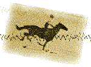

Жила-была лошадка.
Любила кушать сладко.
Когда овес жевала о сахаре мечтала.
Жила в конюшне чистой, пришли туда артисты.
Здесь рядом цирк был близко.
Лошадку увидали,,Красавица!- сказали.
-Такую мы лошадку давно уже искали".
С собой лошадку взяли и сахарку ей дали.
она была так рада. ,,А что мне делать надо?"
-подумала лошадка.-За что я ем так сладко?"
Лошадку все любили, всему ее учили.
И на арену цирка даже выводили.
Лошадка так старалась, способной оказалась.
Всему училась быстро и вот она артистка.
Кричит ей зритель:,,Браво! Лошадка чудо прямо".
Ей хлопают в ладоши-вот цирк какой хороший.
Лошадка цифры знает, слова она читает.
Всем кланяется низко и скачет очень быстро.
А после представленья ей хочется варенья.
Такая вот лошадка, так кушать любит сладко.
Но разве так бывает? Детишки давно знают.
Лошадка любит травку, овес ест на добавку.
Но только не варенье- вот это представленье!
Все в цирке удивлялись, без сладкого остались.
Лошадка сахар съела, варенья захотела.
Варенья ей не дали:,,Зачем тебе, сказали
,-давно весь сахар съела. Ну что это за дело?"
Обиделась лошадка:,,Уйду сейчас обратно и буду жить в конюшне. Мне там намного лучше".
Лошадка заскучала и выступать не стала.
Лежала и грустила, обидно очень было.
Потом тихонько встала, взяла и убежала.
И по ночному городу всю ночь одна гуляла.
Под утро так устала,к конюшне своей прежней лошадка побежала.
Ее там все узнали и радостно встречали.
Спросили:,,Все в порядке, ну как живешь там, сладко?"
Лошадка отвечала:,,Я просто заскучала и к вам сегодня утром в гости прибежала".
А после долго-долго овес она жевала.
Лежала и вздыхала, лошадка очень сильно по цирку тосковала.
,,Детишки там повсюду,а как без них я буду?-подумала лошадка
.-без них мне ох не сладко. И сахарку не надо-детишки вот награда.
Они мне улыбались и громко все смеялись.
Хлопали в ладоши, вот цирк какой хороший.
Вернусь туда обратно,работать там приятно".
Лошадка быстро встала и к цирку побежала.
А там ее все ждали, давно уже искали.
И сахарку купили, лошадку все любили.
,,Вернись скорей, лошадка! Ты будешь кушать сладко",
- детишки все кричали, конфетки ей бросали.
Вернулась к ним лошадка , ей было так приятно.
Головкой всем кивала и хвостиком махала.
ЕЕ все обнимали, долго целовали и бочку варенья сразу обещали. Она сказала:
,,Что вы, не нужно мне такого. Отдайте лучше деткам, себе возьму конфетки".
Так счастлива лошадка, ей тут живется сладко.
Всех в цирк вас приглашает, вдруг кто ее узнает.
А если вы придете и сахарку возьмете, лошадка будет рада и выступит как надо.